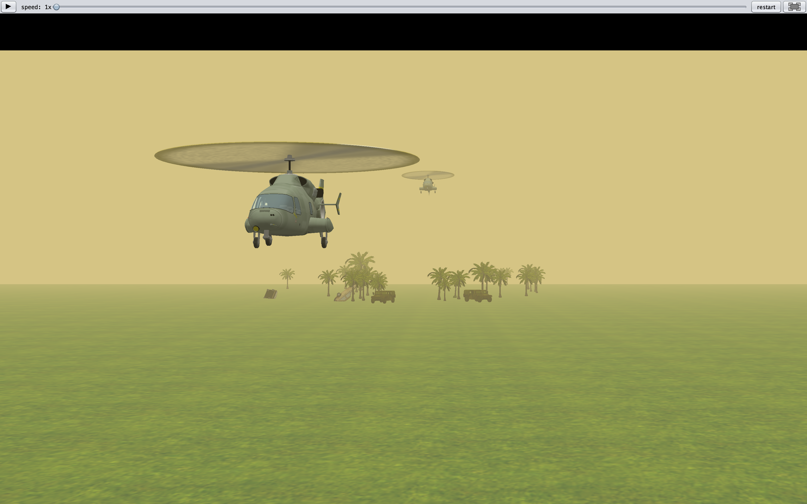
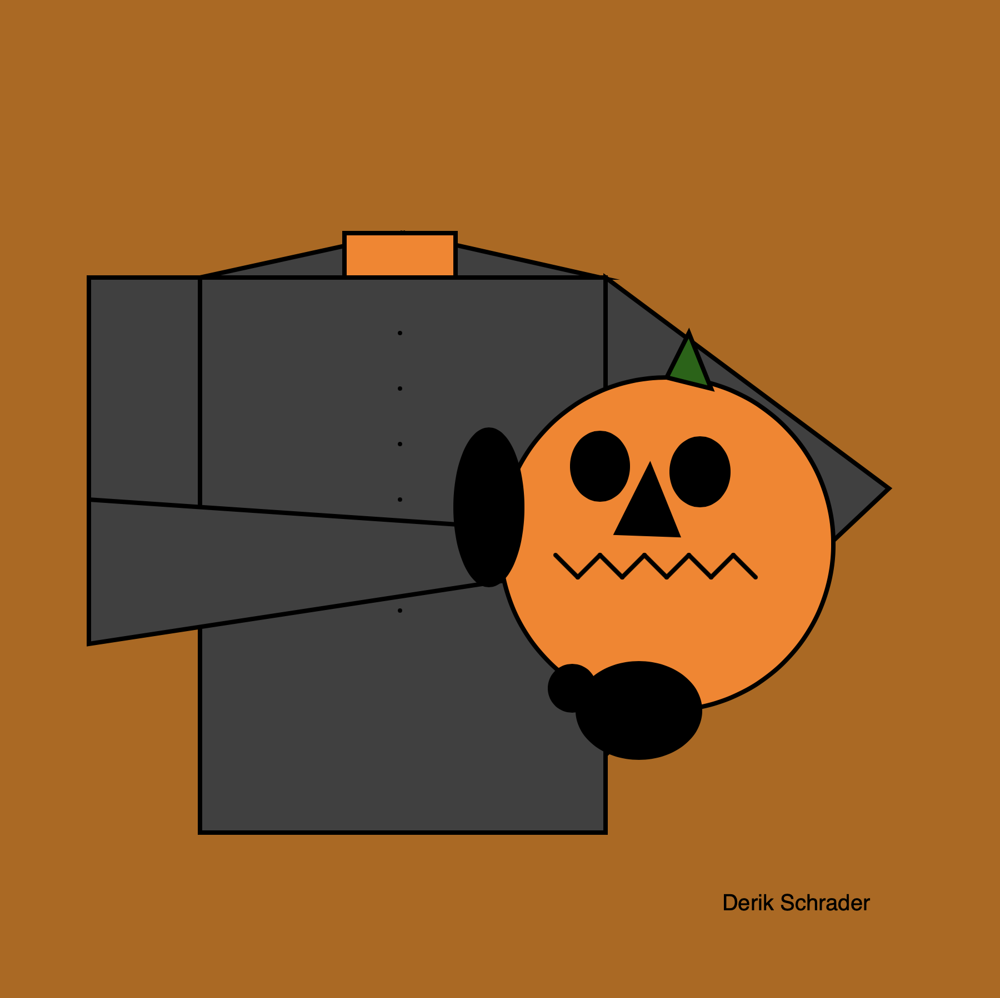
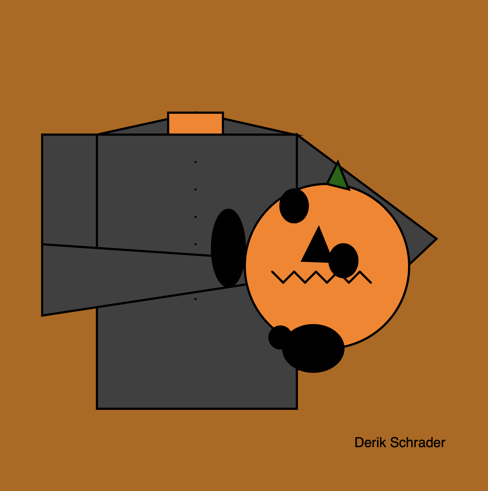

Derik's MART 120 Portfolio

Project 1: We created a story or game using Scratch while learning functions and variables.

Project 1: I created "The Far Side Dragon Fly", a story about the creation of the dragon fly.

Project 2: Focus was spent on mobile apps. I made a game to save the squirrels nuts.

Project 2: I also made a scetching app for when you find yourself bored on those late nights out.

Project 3: Alice was used to create a game or story while focusing on creativity and event handling.

Project 4: Focus was spent on learning the basics of HTML, CSS, and JavaScript in order to build a website.

Project 4: Over the span of three weeks I was able to create a three webpages while learning HTML basics.

Project 5: After an introduction to p5.js I was able to create a "self portrait" using HTML and JavaScript.

Project 6: Utilizing the "self portrait" from this project, basic animation was added to multiple shapes and then confined to the perimeter of the canvs.

Project 7: Using take-aways from the previous project, a "spore game" was created. Focus was empasized on loops, conditionals, logical operators, and events.

Project 7: During the last portion of this project we added arrays. Truth be told, I had a little trouble in this area and the outcome was not as desired.